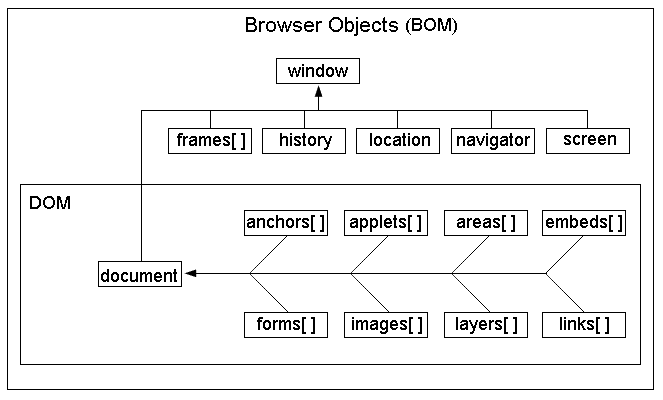

JavaScript的组成
javascript的组成分为三部分
- ECMAScript:JavaScript 的语法标准。包括变量、表达式、运算符、函数、if语句、for语句等等。
- DOM: Document Object Model,文档对象模型，操作网页上的元素的API。比如让盒子移动、变色、轮播图等
- BOM：Browser Object Model,浏览器对象模型，操作浏览器部分功能的API。比如让浏览器自动滚动。
什么是BOM
BOM 的结构图

从上图可以看出：
- windows对象是BOM的顶层核心对象，所有的对象都是通过它延申出来的，也可以称为windows的子对象。
- DOM是BOM的一部分
window对象
- window对象是JavaScript中的顶级对象。
- 全局变量、自定义函数也是windowd对象的属性和方法
- window对象下的属性和方法调用时可以省略window.
BOM常见的内置方法和对象
弹出系统对话框
比如说，alert(1) 是 window.alert（1）的缩写，因为它是window的子方法
系统对话框有三种：
1 | alert(); //警告框，不同浏览器下的外观是不一样的 |
打开窗口，关闭窗口
1、打开窗口
1 | window.open(url,target,param); |
参数解释:
- url:要打开的地址
- target：新窗口的位置,可以是：_blank、_self(当前窗口)，_parent(父框架).
- param:新窗口的一些设置
- 返回值：新窗口的句柄
param这个参数，可以填很多的参数（），比如
- name：新窗口的名称，可以为空
- featurse：属性控制字符串，在此控制窗口的各种属性，属性之间以逗号隔开。
- fullscreen= { yes/no/1/0 } 是否全屏，默认no
- channelmode= { yes/no/1/0 } 是否显示频道栏，默认no
- toolbar= { yes/no/1/0 } 是否显示工具条，默认no
- location= { yes/no/1/0 } 是否显示地址栏，默认no。（有的浏览器不一定支持）
- directories = { yes/no/1/0 } 是否显示转向按钮，默认no
- status= { yes/no/1/0 } 是否显示窗口状态条，默认no
- menubar= { yes/no/1/0 } 是否显示菜单，默认no
- scrollbars= { yes/no/1/0 } 是否显示滚动条，默认yes
- resizable= { yes/no/1/0 } 是否窗口可调整大小，默认no
- width=number 窗口宽度（像素单位）
- height=number 窗口高度（像素单位）
- top=number 窗口离屏幕顶部距离（像素单位）
- left=number 窗口离屏幕左边距离（像素单位）
各个参数之间用逗号隔开就行，但我们最好是把它们统一放到json里。
2、 关闭窗口： window.close();
代码例子：
1 |
|
3、新窗口相关
- 新窗口.moveTo(5,5);
- 新窗口.moveBy();
- 新窗口.resizeTo();
- window.resizeBy(); 不大懂
代码举例：
1 | var newWin=window.open('http://baidu.com','_blank',json); |
localtion 对象
window.location 可以简写为location。location相当于浏览器的地址栏，可以将url解析成独立的片段。
location对象的属性
- href:跳转
- hash:返回url中#后面的内容，包含#
- host:主机名
- pathname url中的路径部分
- protocol 协议一般是http,https
- search 查询字符串
location.href 属性举例
点击盒子时，进行跳转
1 | <body> |
location对象的方法:
- location.assign():改变浏览器地址栏的地址，并记录到历史中
- 设置location.href就会调用assign(),一般使用location.href 进行页面跳转
- location.replace:替换浏览器地址栏的地址，不会记录到历史中
- location.reload()：重新加载，刷新呗
navigator对象
window.navigator 的一些属性可以获取客户端的一些信息
- userAgent:系统，浏览器
- platform:浏览器支持的系统，win/mac/linux
举例:
1 | console.log(navigator.userAgent); |
history
1、历史纪录管理
2、后退
- history.back();
- history.go(-1); //0是刷新
3、前进
- history.forward();
- history.go(1)